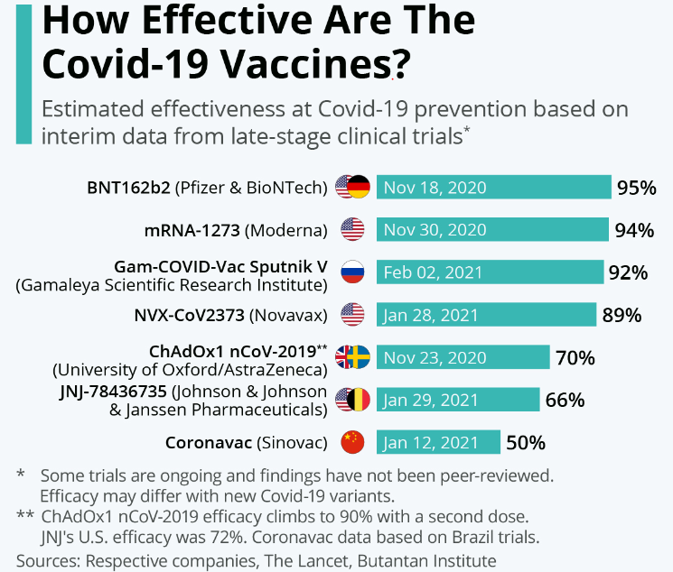

Impact of Covid-19 Vaccines on Death-rates
Introduction
The COVID-19 pandemic has unleashed devastating health and economic crises worldwide, causing more than 3.9 million deaths and 183 million reported infections globally. The Covid-19 pandemic has impacted human lives and activities on all levels. Economically it has halted productions, suspended business activity, shifted product demands and it disrupted global supply chains and increased market volatility. Socially prolonged exposure to stress and increased community uneasiness affected quality of lives. Additionally, during the heat of the pandemic, people experienced critical conditions such as severe symptoms, a lack of hospital and intensive care unit beds, the loss of loved ones, tight curfews, and quarantine. As of 2022, the Covid-19 infection rates have reduced drastically in all countries, and people are almost leading normal lives with very few restrictions. People are still required to wear face masks in some designated areas for example in public transport and airports. The reduced infections rate and death rate can be safely attributed to the inception of Covid-19 vaccines. Covid-19 vaccines are intended to provide acquired immunity against severe acute respiratory syndrome coronavirus 2 (SARS-CoV-2). The Covid-19 and thus preventing severe symptomatic illness. In 2020, the first Covid-19 Vaccines were developed and made available to the public through emergency authorizations and conditional approvals. Initially, most Covid-19 vaccines were two-dose vaccines. However, immunity from the vaccines has been found to decrease over time, which led to the inception of Covid-19 Boosters to maintain immunity
Aim
The Covid-19 Vaccines are widely accredited for their role in reducing the spread of Covid-19 and reducing the severity and death caused by Covid-19. This project aims to explore the impact of Covid-19 vaccines on deathrates in different countries.
In this project we used 3 datasets for generating plots and insights. 1. Worldwide Daily Vaccination Data 2. Covid -19 Cases Summary Data 3. Covid-19 Daily Cases Data.
There is plenty of data available on various platforms regarding the vaccinations used world-wide. In this article, we will use the COVID-19 World Vaccination Progress( https://www.kaggle.com/datasets/gpreda/covid-world-vaccination-progress) along with Covid-19 Global Dataset(https://www.kaggle.com/datasets/josephassaker/covid19-global-dataset) which contains daily stats of new COVID cases. Using the above two mentioned datasets let us try to get an overview of how the world is fighting against this pandemic and the efficacy of vaccinations currently used.
Hypothesis
The project has the following hypothesis:
- H0 = Covid-19 vaccines has an reduced the deathrates related to Covid-19 infection
- H1 = Covid-19 vaccines did not reduce the deathrates related to Covid-19 infection
About Vaccines
How Vaccines Help
Vaccines contain weakened or inactive parts of a particular organism (antigen) that triggers an immune response within the body. Newer vaccines contain the blueprint for producing antigens rather than the antigen itself. Regardless of whether the vaccine is made up of the antigen itself or the blueprint so that the body will produce the antigen, this weakened version will not cause the disease in the person receiving the vaccine, but it will prompt their immune system to respond much as it would have on its first reaction to the actual pathogen.
Herd immunity
When someone is vaccinated, they are very likely to be protected against the targeted disease. But not everyone can be vaccinated. People with underlying health conditions that weaken their immune systems (such as cancer or HIV) or who have severe allergies to some vaccine components may not be able to get vaccinated with certain vaccines. These people can still be protected if they live in and amongst others who are vaccinated. When a lot of people in a community are vaccinated the pathogen has a hard time circulating because most of the people it encounters are immune. So the more that others are vaccinated, the less likely people who are unable to be protected by vaccines are at risk of even being exposed to the harmful pathogens. This is called herd immunity.
This is especially important for those people who not only can’t be vaccinated but may be more susceptible to the diseases we vaccinate against. No single vaccine provides 100% protection, and herd immunity does not provide full protection to those who cannot safely be vaccinated. But with herd immunity, these people will have substantial protection, thanks to those around them being vaccinated.
Vaccinating not one’s self, but also protects those in the community who are unable to be vaccinated
